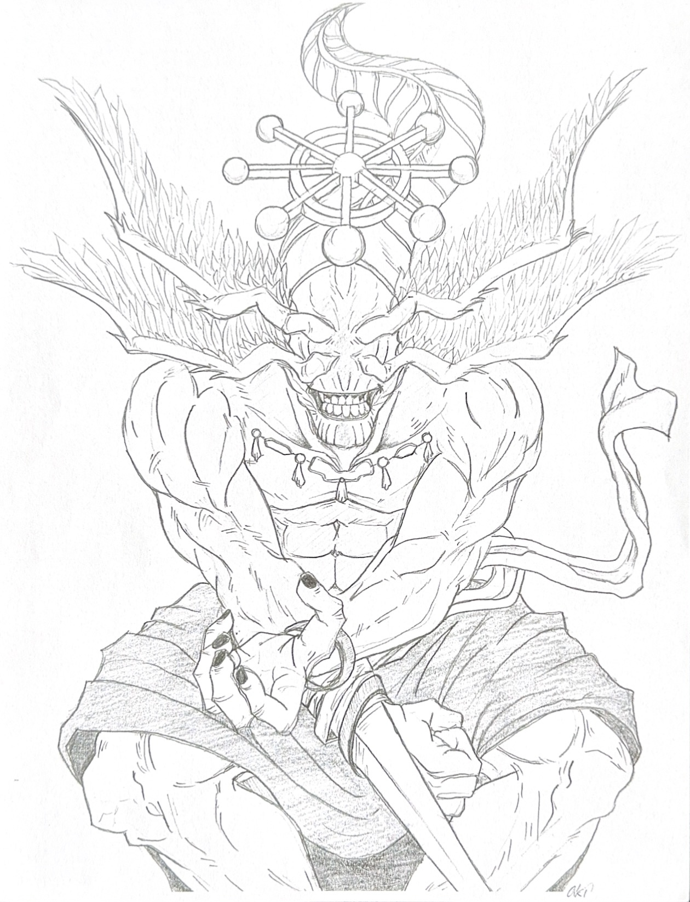
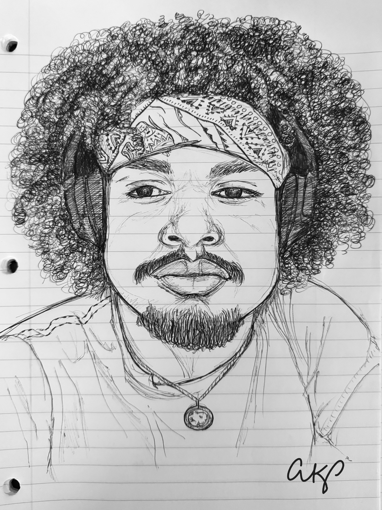
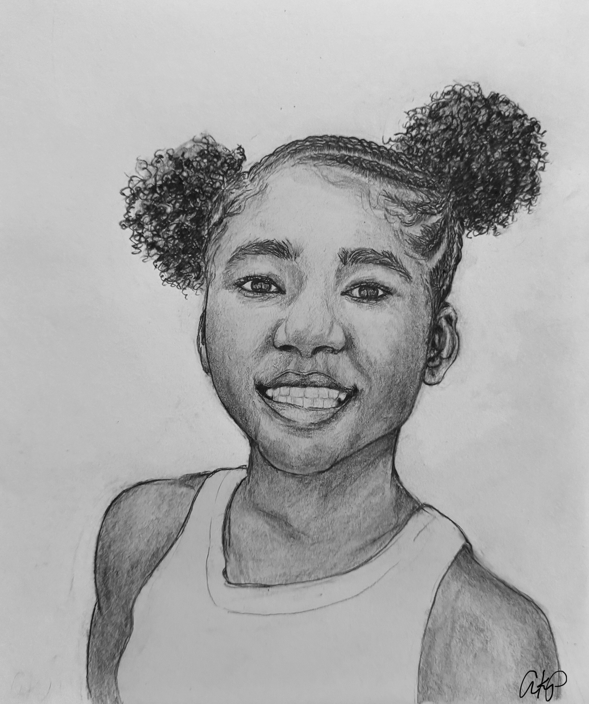
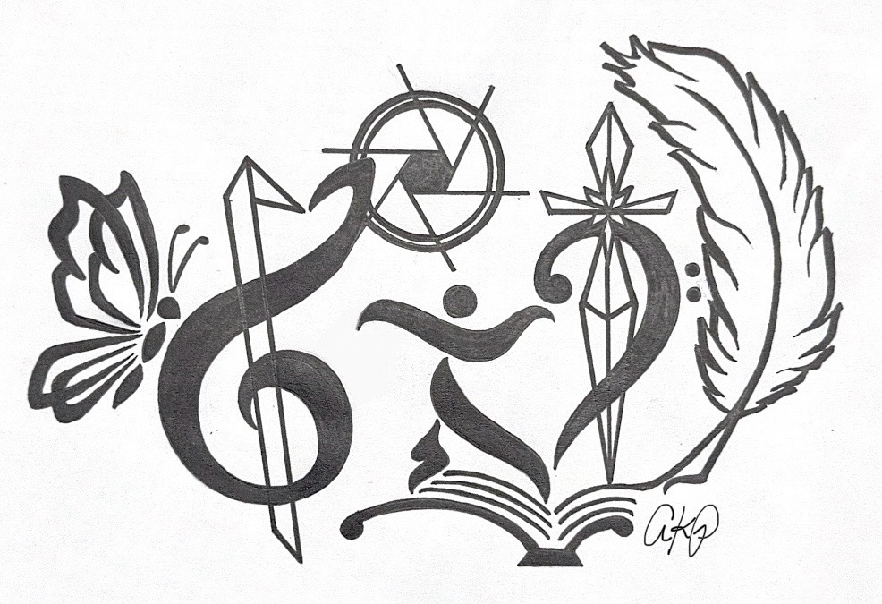
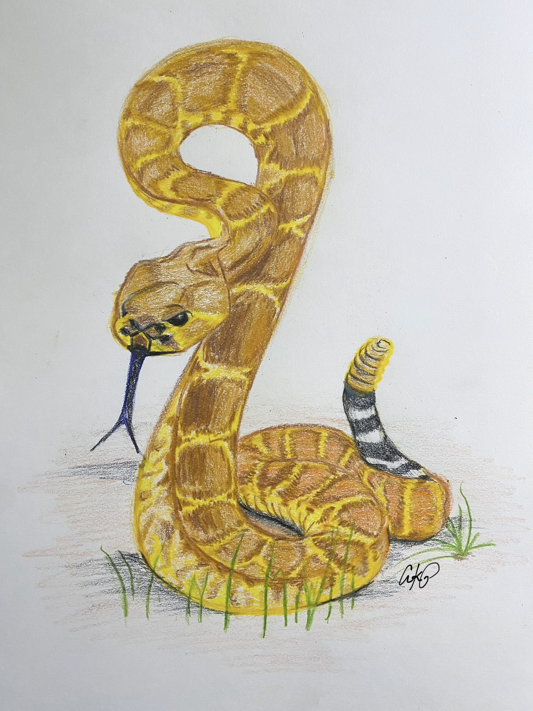

Visual Art Studies
Anatomy and Texture

Mahoraga Anatomy Study
Navigating structural anatomy of a complex character from the popular manga series Jujutsu Kaisen.

Groot Surface Study
Wood grain texture study paired with character lighting and contrast.
Portraits

Lighting Study 1
Collection of portrait studies that explore human facial structures, emtions, and understanding of light.

Lighting Study 2
Collection of portrait studies that explore human facial structures, emtions, and understanding of light.

Lighting Study 3
Collection of portrait studies that explore human facial structures, emtions, and understanding of light.

Lighting Study 4
Collection of portrait studies that explore human facial structures, emtions, and understanding of light.

Lighting Study 5
Collection of portrait studies that explore human facial structures, emtions, and understanding of light.

Lighting Study 6
Collection of portrait studies that explore human facial structures, emtions, and understanding of light.
Logos and Color Theory

Friendship Logo
This is a symbol inspired through the friendship of a group of college students. Each person in the friend group is represented through a figure within the logo.
Actions such as dancing, photography, crocheting, musicianship and writing are captured within.

Rattlesnake Color Theory
Through the use of colored pencils, a texture and color study was conducted to represent the snake in its natural state.